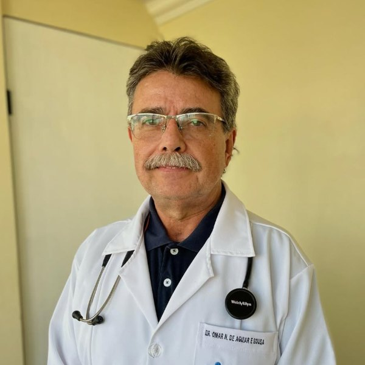

Do diagnóstico à cirurgia, com tempo para explicar.
Endoscopia digestiva, cirurgias ambulatoriais e consultas em clínica e cirurgia geral, no centro de Curitiba. Aqui você entende o que tem, por que tem e quais são os caminhos.
Rua Voluntários da Pátria, 400, 11º andar — Edifício Wawel — Centro, Curitiba, PR, 80020-000

Endoscopia digestiva alta
Exame que examina esôfago, estômago e a primeira parte do intestino por dentro, com uma câmera fina. É o exame que responde à maior parte das queixas digestivas altas e permite colher biópsias no mesmo momento.
- Com sedação ou sem sedação
- Preparo simples, baseado em jejum
- Laudo explicado na consulta de retorno
Cirurgia ambulatorial
Procedimentos menores feitos em ambiente cirúrgico preparado, com anestesia local ou sedação leve, e alta no mesmo dia. Sem internamento e, na maior parte dos casos, com afastamento curto do trabalho.
- Lesões de pele, cistos e lipomas
- Unha encravada
- Pequenas hérnias e biópsias

Dr. Omar Neves de Aguiar e Sousa
CRM-PR 12556 · RQE 5109
- 1990 — Medicina, Pontifícia Universidade Católica do Paraná
- 1992 — Residência em Clínica Cirúrgica, Santa Casa de Curitiba
- 1993 — Especialização em Endoscopia Digestiva
São mais de três décadas dedicadas à cirurgia e ao aparelho digestivo, com uma forma de atender que privilegia explicar antes de indicar. Nenhum exame ou cirurgia é indicado sem que o paciente entenda o motivo e as alternativas.
Onde estamos
Rua Voluntários da Pátria, 400, 11º andar
Edifício Wawel — Centro, Curitiba, PR, 80020-000
O Edifício Wawel fica no Centro, em região servida por várias linhas de ônibus e a poucos minutos a pé da Praça Osório. O atendimento é no 11º andar.